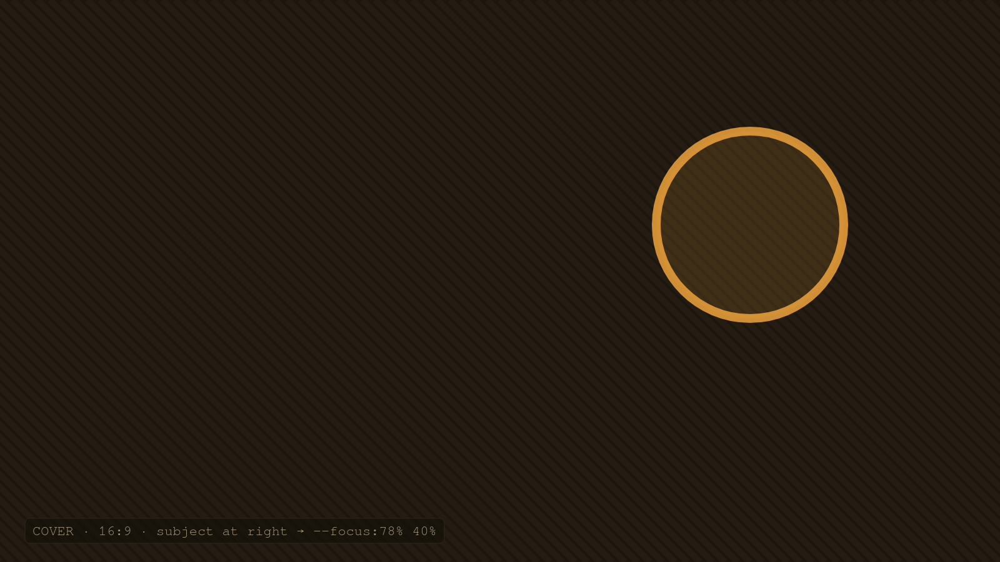

Dev
A reproducible dev environment with Nix flakes

For years my setup was a pile of dotfiles and a prayer. A new laptop meant a lost afternoon and a subtly different machine. Nix flakes ended that — one file describes the whole environment, and every machine that reads it becomes identical, down to the patch version.
The pitch is simple: declarative, reproducible, and rollback-able. The reality takes a weekend to internalise, and then you never go back.
Pinning the world
A flake locks its inputs in a flake.lock, so the exact revision of nixpkgs is captured alongside your config. There is no "latest" surprising you six months from now.
# flake.nix — the shape of it { inputs.nixpkgs.url = "github:NixOS/nixpkgs/nixos-24.11"; outputs = { self, nixpkgs }: { devShells.default = "…tools pinned here…"; }; }
The goal isn't novelty. It's that the machine stops being a variable.
Drop into the shell with nix develop and the toolchain is there — same compiler, same language servers, same formatters — on the Pi, on the laptop, in CI.
Where it earns its keep
Onboarding a second machine went from an afternoon to a single command. The calm of knowing the desk is reproducible is the part I didn't expect to value most.
Read with intention.
aesthete + coding